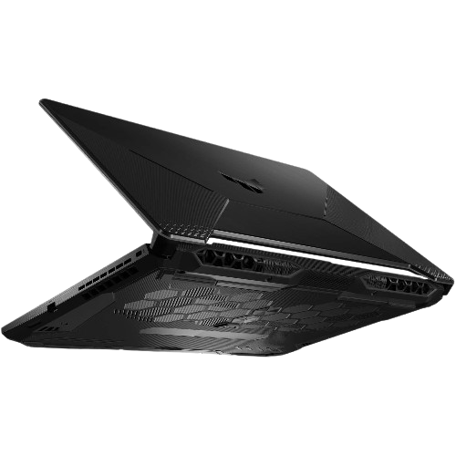
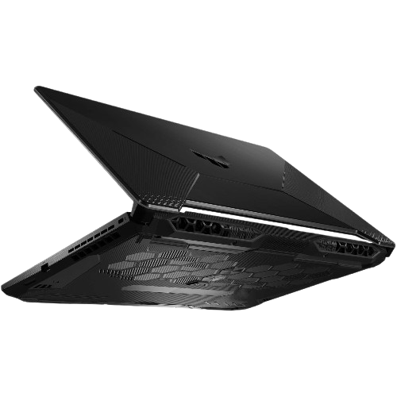
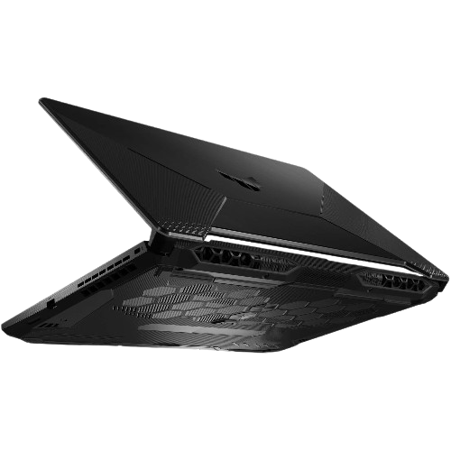

Erő, tartósság és stílus – mindez egy gamer laptopban
Az ASUS TUF Gaming A15 az egyik legismertebb gamer laptop, amely a teljesítményre és a megbízhatóságra összpontosít. A TUF sorozat lényege, hogy katonai szabványok szerint tesztelt, strapabíró gépet kapjon a felhasználó, kompromisszumok nélkül. A TUF A15 modern AMD Ryzen processzorokkal és NVIDIA GeForce grafikus vezérlőkkel érkezik, így kiváló választás játékra, videószerkesztésre és tanulásra is.

| Komponens | Leírás |
|---|---|
| Processzor | AMD Ryzen 5 7535HS (6 mag, 12 szál, boost akár 4.55 GHz) |
| Grafikus vezérlő | NVIDIA GeForce RTX 3050 Laptop GPU (4 GB GDDR6) |
| Kijelző | 15.6” Full HD (1920×1080), 144 Hz, IPS, anti-glare |
| Memória | 16 GB DDR5-5600 MHz RAM (két SO-DIMM foglalat) |
| Tárhely | 512 GB PCIe 4.0 NVMe SSD |
| Portok | HDMI 2.1, USB-A, USB-C, RJ45 LAN, Audio Jack |
| Súly | Kb. 2.3 kg |
| Operációs rendszer | Windows 11 Home |
🔗 ASUS hivatalos oldal
💬 Reddit – felhasználói vélemények
🛒 ASUS eStore Magyarország